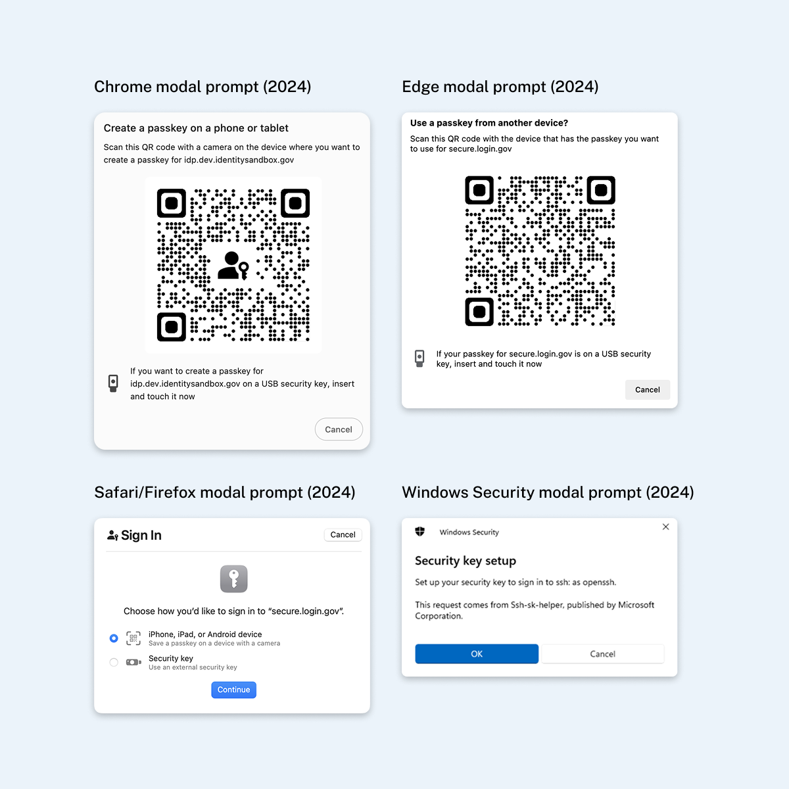

Improving security key understanding and success
Rewriting and re-illustrating the security key setup page so the people who own a security key succeed, and the people who don't aren't led astray.
- +50%average setup success rate
- 1,298support tickets analyzed
Background
Preventing phishing of Login.gov accounts is crucial to protect both partner organizations and user data, as compromised accounts can risk funds, sensitive information, and systems. Our team aimed to increase the use of phishing-resistant authentication methods like passkeys, government employee IDs, and security keys.
My Role
I applied UX, content, and visual design expertise to analyze and enhance the security key setup page, resulting in a 50% improvement in authentication setup success.
The Challenge
In November 2023, only 12% of active users employed phishing-resistant methods, with 78% relying on phishable SMS one-time passcodes. By February 2024, just 66% of security key users successfully authenticated within two weeks.
We sampled 1,298 support tickets between January 21, 2023 and January 20, 2024 and found three key themes:
- Process issues (433 tickets, ~33%): Issues ranged from users being unfamiliar with security keys to not having access to one when signing in.
- Multi-factor authentication (320 tickets, ~25%): Many security key tickets seemed mislabeled as other MFAs. There was a high number of face/touch unlock (passkey) tickets mixed in due to shared system messaging.
- Various codes (256 tickets, ~20%): Login.gov has a variety of different codes, and for some users it's not clear what they are or what they do. This adds confusion on top of the long processes users go through for account creation, identity verification, and account reset.
The original security key setup page included a vague H1, "Add your security key", which wasn't specific enough since all the other methods used the same "Add x method" language. The paragraph below the H1 mentioned FIDO standards, which is not an important detail for the average user, adding to information overload.

In addition, once the user clicks "Continue" they are met with whichever passkey setup modal their browser features.
Chrome and Edge lead with a QR code, prompting users to scan it with their mobile device. The security key icon and text are diminished in these examples, adding to user confusion and making it less likely that they will be successful in setting up a security key.
Safari and Firefox fare slightly better since they give equal weight to mobile passkeys and security keys. Windows is by far the best since it focuses solely on setting up a security key.

Initial Content Updates
The first round of updates I made came in content changes throughout the setup page. This included an update to the H1: "Insert your security key into your computer's USB port" (mobile devices say "phone's port"). This made the text more specific and actionable than the original "Add your security key".
I also added a link to the relevant help article in case users needed more guidance for setting up or authenticating with their security key. Updated name label and CTA copy also used more specific language.

Design & Content Revisions
After the first set of improvements, I saw an additional opportunity to use our process list component to break down the steps (pictured below is our authentication app setup page). I also saw an opportunity to create an illustration or animation to further build user understanding.

Below is my design of the updated security key setup page. I reordered and edited the content and hierarchy: enter a nickname, see an animation of how to use a security key, and finally click the "Set up security key" CTA.
Using the Figma plugin SVG Animate, I made an animation that demonstrates what a security key looks like and how to use it to authenticate. This would be the first Login.gov authentication method to feature a visual aid.
The version below illustrates how a user should insert their security key into their mobile device.
Outcomes & Impact
Following the initial implementation, we looked at trends for the security key setup page after our content changes throughout April 2024. Andrew Duthie, our Lead Software Engineer, analyzed the data after a month and found the following:
- The success rate increased by an average of 50%, since those who continue setting up a security key are more likely to have one and therefore more likely to succeed.
- The conversion rate decreased by an average of 40%, because the content effectively communicates that most users are not eligible for setting up a security key.